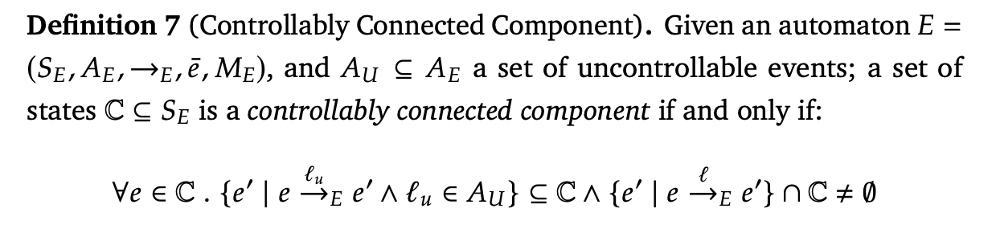
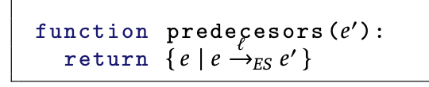

” Interestingly, the three disciplines share the important characteristic that input specifications are given via compact descriptions.”
That is, the problems’ semantics are based on sorts of transitions systems, which are often exponential with respect to the size of these compact descriptions.
In supervisory control, DES are expressed compactly by relying on a modular approach based on the parallel composition of multiple interacting components, referred to as the plant.
Supervisory control aims at controlling DES to achieve certain guarantees, this is done by deploying a so-called “supervisor” that dynamically disables controllable events while monitoring uncontrollable events. Traditional supervisory control techniques look for maximally permissive supervisors, which has been argued to require a prohibitive computational cost. Directors (i.e., minimally permissive supervisors) have been proposed as a computational efficient alternative, still effective synthesis procedures have not yet been developed for this particular case.
Three different representations are mentioned in the literature:
- Supervisory Control (we’ll do this one)
- Reactive Synthesis (the declarative specification is made using LTL or CTL -Computational Tree Logic, a different temporal logic-)
- Automated Planning (mostly developed for deterministic systems, you specify preconditions, post-conditions and a goal)
All the different representations can be modeled with finite transition systems.
In spite of considering problem definitions with subtle variations, the three areas can be seen as looking for a system subset satisfying a given property.
Usually in planning, the goal is to reach a particular state, that is, a reachability objective. Instead, in reactive synthesis, liveness requirement such as a Buchi acceptance condition, is pursued. Whereas, in supervisory control we look for a subset of the system that can always continue to be productive
state explosion has been dealt with in the three fields relying on different approaches.
supervisory control compositional analyses are performed on individual components allowing for a (potentially) efficient merging procedure that meets the problem requirements
we review techniques from the different fields and, by combining them, we devise a novel algorithmic solution called Directed Controller Synthesis (D C S)
The main contributions of this thesis can be summarized as follows:
- A novel algorithmic approach (D C S) to solve the compositional supervisory control problem, inspired by the combination of techniques from the fields of supervisory control, reactive synthesis and automated planning. Can handle much larger problem sizes than SotA.
- A polynomial-time compilation for supervisory control.
Preliminaries
A common approach to relate different fields tackling similar problems is to provide translations between their problem formalizations.
Summarizing, the synthesis of operational strategies with partially observable and non-deterministic environments is a problem with many facets. In this thesis we consider the synthesis problem under these settings, and compare the approaches taken in the three fields highlighting their differences. Furthermore, we propose an extension to our on-the-fly compositional method avoiding the blowup induced by determinization steps, thus permitting greater scalability
A A compositional supervisory control problem is defined by two elements, first a set of intervening components and, second, a partition of the event set of the plant in controllable and uncontrollable events.
We compose the components through synchronous product, whereupon the marked states for the product will turn out to be those such that each corresponding state in the tuple is a marked state in its corresponding component.
Given a set of automata and a partition of the event set, we look for a supervisor that can disable some of the controllable events and monitor uncontrollable events; such that every word in the language generated by the restricted plant can be extended to a word in the language accepted by the plant.
A solution for E is a supervisor σ (va de A* -> Ae -cadenas a eventos-), tq σ is:
- Controlable: para todo w, σ(w) contiene todos los Au
- Non-blocking: para todo w tq w en Lσ(E), existe w’ tq ww’ en Lσ(E) y ê -> e_m, con e_m en Me, ê el inicial.
That is, a supervisor σ is said to be controllable (or admissible) if it only disables controllable events; and it is non-blocking if it is able to restrict the language generated by the plant E to a set of strings that can always be extended to reach a marked state.
Maximality comes at a cost in complexity and hence there is a growing interest in less ambitious solution concepts such as directors, which require controllers to enable at most one controllable event at each state. Thus, here we follow this trend away from maximality and accept a supervisor satisfying solely the base requirements.
The results show that our translations allow to transparently apply techniques from reactive synthesis and automated planning with an efficiency that rivals that of native supervisory control tools.
In fact, mixed states represent a race condition that, in worst case, can always be won by the plant, and hence if there is a solution to the control problem, it must necessarily have a solution on the occurrence of the uncontrollable events.
Part 4 gives supervisory control as reactive synthesis, an equivalence/translation proof by construction between supervisors and strategies, supervisory control problems and CTL formulas.
The theorem states:
Let E be a compositional supervisory control problem and let ϕE the CTL formula obtained by following the above proposed translation from E. Then, there exists a supervisor σ for E if and only if there exists a strategy δ for ϕE. In addition, σ can be constructed from δ and vice versa.
From the benchmarks: Despite relying on a compositional analysis S U P R E M I C A performs only slightly better than the monolithic approach (implemented by M T S A). Interestingly, in spite of being native to supervisory control, it solves less instances of the benchmark than other tools working under our encoding.
The translationbased approach to supervisory control is viable since the computational overhead introduced by the translation is negligible with respect of the cost of solving the synthesis problem.
The Algorithm
The on-the-fly exploration procedure is a modification of Best First Search (a classical informed search procedure) adapted to account for uncontrollable events. We perform a forward exploration, keeping a priority queue of open states ordered by their estimated distance to a goal, and initialized only with the initial state e¯. At each iteration we take the highest “priority” state e from the queue and, by following its first unexplored event, we expand a child state e’ adding it to the exploration structure. If we identify e’ as a goal or an error we prune the exploration. Otherwise, applying the heuristic to e’ we obtain a ranking of its enabled events, and then we insert e’ in the open queue (considering the “priority” of e’ to be the estimated distance of its first unexplored event).
Every time a loop is closed by following a transition from a state e to a state e’, we need to inspect the exploration structure to decide if the state is a goal, an error, or so far undetermined. In order to do this we check whether e belongs to a Controllably Connected Component (CCC) unfolding from e’, that is, a set C of the states reachable from e’ for which: (a) all uncontrollable transitions lead back to C; and (b) for states where there are no enabled uncontrollable events, at least one controllable transition also leads
The exploration process is repeated until a marked CCC containing the initial state is discovered, or until arriving to the conclusion that such a CCC does not exist.
If the open queue becomes empty or the initial state is flagged as an error, D C S reports that the problem is unrealizable (i.e., there is no supervisor). Whereas, if the initial state is flagged as a goal (i.e., belongs to a marked CCC) we build a supervisor by following, from the initial state, the transitions connecting states also flagged as goals.
State Propagation
- The error status is propagated when a transition leads to a state already flagged as error and when expanding a deadlock state (since we know for certain that this prevents achieving the goal).
- The goal status is propagated when a transition leads to a state already flagged as a goal and upon discovering a marked CCC.
- The undetermined status is propagated when closing a loop over a state that does not belong to a marked CCC, but from which there could still be unexplored paths leading to such a goal. We do this in an orderly fashion propagating the status information from e back to its ancestors.
Definition of CCC 
The heuristic function takes a state e and the ES, and returns a ranking of the events enabled from e. Heuristic functions may extract useful information from the ES, such as the marked states visited in the path from the initial state to e.
Definition of predecessors: 
all reachable uncontrollable transitions are included in fully uncontrollable states, and at least one controllable transition is included in fully controllable states. Moreover, in mixed states all uncontrollable transitions are included, and if no such transition leads to a marked state then at least one controllable transition with this property is included too. Thus, the result is a valid nonblocking supervisor.
The proof follows from the fact that for D C S to return a supervisor, the initial state e¯ has to be flagged as a goal. Thus, there must be a marked CCC C containing e¯. In such a case, it is straightforward to see that we can extract a supervisor from C (i.e., restricting the plant to remain within C).
Controllable: For this not to hold, σ must disable some uncontrollable event from a state in which the event is enabled.
Non-blocking: for this not to hold, there must exist a word w ∈ Lσ(E) such that w cannot be extended to reach a marked state.
We guide A* with the precomputed number of steps between states of Ei. The accumulated cost of a path explored by A* is the sum of distances of the steps in the path. Since the number of steps underestimates the distance, A* is guaranteed to return the shortest path to a target state of Ei. Interestingly, we can avoid repeating the work performed by A* by caching the paths explored for each state. That is, in worst case, A* needs to consider every state only once.
The ranking is generated by the rank function, which sorts uncontrollable events in descending order and then appends controllable events sorted in ascending order.
The exponential complexity presented by the CM problem has a big impact on D C S. D C S solves the largest number of instances for each case except for CM and TA. Remarkably, M Y N D manages to solve many instances of these difficult problems.
Dudas:
- Al final la heuristica MA cuando llama a A*, el camino mas corto lo computa usando como peso las distancias que tienen en cuenta el orden de los eventos (blocking)?
### Next Steps:
- Paralelizar? Podemos agregar un edge nuevo y solo bloquear para propagar (si un estado sigue en unknown podemos pisarlo, nunca pisamos un known) Cuanta es la ganancia posible? Las heuristicas son tambien algunas trivialmente paralelizables (random, RA).
- Estudiar casos de uso de DCS en la industria y generar benchmarks relevantes a tales casos, + ver optimizaciones del algoritmo que aprovechen topografias tipicas? (no prometo que tal cosa exista, pero sí me da mucha curiosidad). Tambien ver si los bottlenecks en casos reales suelen ser memoria, tiempo o que onda. Basicamente: domain independent? Let’s try domain dependent. Puntualmente, si “We believe that the potential for cross-fertilization is still abundant and that, in spite of complexity barriers, advances in this direction will get us closer to handle practical problems from numerous application domains.” me encantaria armar una noologia, un set de problemas de dominio de aplicacion que hoy en dia no manejamos con DCS (y potencialmente, hallar como abarcarlos).
- “Soft goals, that is, optimization criteria associated with time or cost models, could also be studied.” Esto me llama mucho la atencion si es lo que creo que es (ponerle precio a los goals y buscar los mas caros?) pero no lei la referencia aun.
- Limpieza previa? Hacemos que cada componente pierda los nodos que sabemos no alcanzan (DFS-reverso) un nodo marcado.